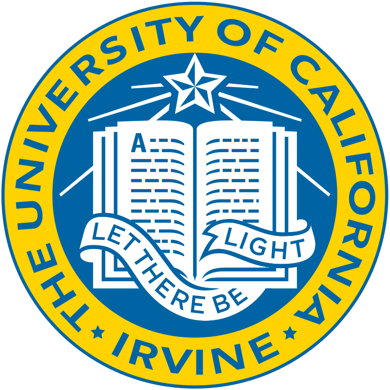

Yuelin Xin
UC Irvine
Irvine, CA
Contact
yuelix1@uci.edu
sc20yx2@leeds.ac.uk
Labels
computer vision
machine learning
3d vision
medical image analysis
compilers
ml systems
About
Hi there, this is the homepage of Yuelin Xin (Jackie). He is an incoming computer science PhD student at the University of California, Irvine. He is also a researcher in computer vision and ML systems.
His current research interest lies in the exploration of vision models and learning paradigms that produce generalizable and robust representations for 2D and 3D data. He's also interested in the downstream applications of these methods in a medical context, especially tasks with limited labeled data.
He is currently working with Dr. Sharib Ali and Prof. Xiaohui Xie in computer vision and medical image analysis at the University of Leeds and the University of California, Irvine.
News
Jun 2024
Our paper "On-the-Fly Guidance Training for Medical Image Registration" has been accepted to MICCAI 2024, check it out here!
Jun 2024
I have completed my undergraduate study at the University of Leeds 🎉
Apr 2024
I will be returning to UCI for my PhD starting Fall 2024, advised by Prof. Xiaohui Xie. I will be working on 3D vision and medical vision.
Mar 2024
Our community is looking for talented researchers in computer vision / machine learning systems / information representation and reasoning, reach out here if you are interested!
Jan 2024
If you are interested in collaborating with me in research or open-source projects, please reach out here.
Dec 2023
Our newest version of the paper "On-the-Fly Guidance Training for Medical Image Registration" is now available on arXiv. Check it out here.
Oct 2023
I will start working with Dr. Sharib Ali on my final project at the University of Leeds. Focusing on computer vision for medicine.
Jun 2023
I will be visiting UCI from June to September, working in Prof. Xiaohui Xie's group as a research student.
Education & Experience
University of California, Irvine
Starting Sep 2024 · PhD
He will be returning to UCI for his PhD in Computer Science, research in 3D vision and medical vision, advised by Prof. Xiaohui Xie.
University of California, Irvine
Jun 2023 - Sep 2023 · Visiting Research
He was a visiting research student at UCI, where he worked on medical image registration problems using state-of-the-art methods, working with Prof. Xiaohui Xie.
University of Leeds
Sep 2022 - Jun 2024 · Undergraduate
He studied for 2 years at the University of Leeds in Computer Science. He's a projected First Class student. He has conducted research in computer vision for medicine with Dr. Sharib Ali. He has also pursued research in ML systems with Prof. Zheng Wang.
Southwest Jiaotong University
Sep 2020 - Jun 2022 · Undergraduate
He studied for 2 years at SWJTU in Computer Science. He was awarded Best Student in year 1, and was given a scholarship for his outstanding academic performance. He also started his academic career as a computer vision researcher at SWJTU, working with Dr. Zhiguo Long.

Research & Publications

Medical Visual Representation Learning via Deformation Reconstruction
Yuelin Xin, Kun Han, Xiaohui Xie, Sharib Ali
Ongoing
A self-supervised learning approach on learning useful and robust medical visual representations across multiple modalities. We propose a pre-text task based on deformation reconstruction rather than masked image modeling, which is more suitable for medical images, as medical image classification depends on small visual differences that can be masked by MIM approaches.
On-the-Fly Guidance Training for Medical Image Registration
Yicheng Chen*, Shengxiang Ji*, Yuelin Xin*, Kun Han, Xiaohui Xie
Summer 2023, MICCAI 2024
A training framework that successfully unites learning-based methods with optimization techniques to enhance the training of learning-based registration models. OFG provides guidance with pseudo ground truth to the model by optimizing the model's output on-the-fly, which allows the model to learn from the optimization process and improve its performance.
Kernel Transformer: Swin Transformer's Evil Twin
Yuelin Xin, Kun Han, Xiaohui Xie, Sharib Ali
Fall 2023
Kernel Transformer is a new backbone network for vision tasks. It is based on the sliding-window mechanism rather than the shifted-window used in Swin Transformer. This design enables the model to have a wider range of receptive field and more efficient gradient propagation. This architecture is also more flexible and can potentially benefit dense prediction tasks.

Scene Separation & Data Selection: Temporal Segmentation Algorithm for Real-time Video Stream Analysis
Yuelin Xin*, Zihan Zhou*, Yuxuan Xia*
Summer 2022, IJCAI 2022 Workshop
A novel temporal segmentation algorithm used in real-time video stream interpretation. It works together with CNN models to improve the model's ability to handle temporal data by introducing the temporal concept of a "scene", so CNNs can be used to interpret videos in a whole new way.

Hyper Speed Automatic Optical Inspection System
Yuelin Xin*, Zihan Zhou*, Yuxuan Xia*, Jiuqiang Li, Qiyu Ou
Spring 2022
The HSAOIS is an object detection system that is designed and fine tuned based on YOLOv5 to detect defects on computer motherboards. We made great improvements on top of what YOLOv5 already provides, by modifying the model's backbone, and introducing the 2SDS algorithm, we were able to increase the inference speed by 25% without losing accuracy.
Memberships
IEEE: since summer 2023
ACM: since summer 2023
Miracle Factory: since spring 2022
AAAS: since spring 2021
Resume
Uni Hunter
I have been lucky enough to visit many universities around the world, and I've been keeping a list of them (chronologically):
- University of Electronic Science and Technology of China (2013)
- Columbia University (2016)
- Yale University (2016)
- Princeton University (2016)
- Harvard University (2016)
- Massachusetts Institute of Technology (2016)
- Brigham Young University (2016)
- Sichuan University (2018)
- Southwest Jiaotong University (2020)
- Xihua University (2020)
- University of Leeds (2022)
- Leeds Beckett University (2022)
- Imperial College London (2023)
- University College London (2023)
- University of California, Irvine (2023)
- University of California, Merced (2023)
- California Institute of Technology (2023)
- University of California, Los Angeles (2023)
- University of California, Santa Barbara (2023)
- University of California, Santa Cruz (2023)
- Stanford University (2023)
- University of California, Berkeley (2023)
- University of Oxford (2024)
- University of Cambridge (2024)
Sim Racing
I'm an amateur sim racer, I primarily race GT classes such as GT3, GT4 and GTE. I've recently been racing the Porsche 911 RSR and the McLaren 720S GT3 Evo. My sim of choice is mainly Assetto Corsa, Assetto Corsa Competizione, and I'm getting into iRacing.